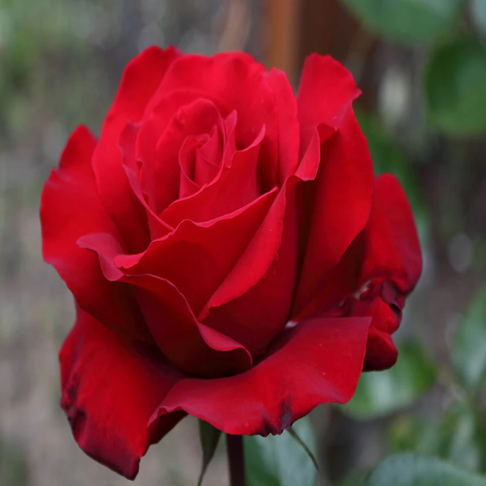

Rose
Roses naturally grow in several colors, and people often use the colors to symbolize things. For example, red roses represent love, and yellow roses are used to show friendship. There are rose gardens around the world, and the largest ones have hundreds of rose varieties and thousands of rose bushes.
Hibiscus

There are over 300 species of hibiscus plants. The yellow hibiscus is the state flower of Hawaii, and other species of hibiscus are the national flowers for Haiti, South Korea, and Malaysia. In addition to being used in designs and clothing, the flower can also be made into medicine, teas, and snacks. It even has its own emoji!
Rafflesia arnoldii

The Rafflesia arnoldii is the largest flower in the world and can be found in the rainforests of Sumatra. It is also called the corpse lily because of its unpleasant smell. Although humans do not enjoy it, the smell attracts insects that help pollinate the flower. Rafflesia flowers are hard to find, and the buds take months to develop.